The Complexity of Stacker Crane Problem in Fixed Topologies
My Background
\(\newcommand{\R}{\mathbb{R}}\) \(\newcommand{\Z}{\mathbb{Z}}\) \(\newcommand{\N}{\mathbb{N}}\)
- Work primarily in combinatorial optimization
- Theoretical computer science background
- care about complexity of algorithms
- care less about finding solutions in parctice.
Stacker Crane Problem
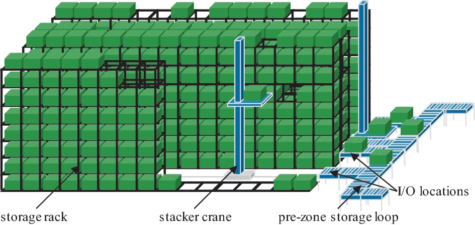Image courtesy (Siciliano, Durek-Linn, and Fottner 2022)
A vehicle of capacity 1, completing pick up and delivery tasks.
Stacker Crane on a graph
For a graph \(G=(V,E)\) with weights on the edges. A single vehicle with capacity 1 is at position \(s_0\in V\).
- There are \(n\) requests of the form \((s_i,t_i) \in {V\choose 2}\)
- The vehicle pick up item \(i\) from \(s_i\), and move it to \(t_i\).
- The vehicle must return to \(s_0\) after completing all requests.
- Goal: minimizes the total weight of the edges traveled by the vehicle.
Stacker Crane on a path
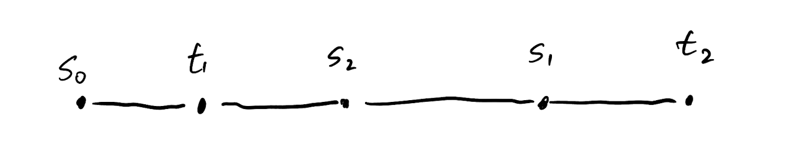Stacker crane on a path
\(s_0\)
\(\color{blue}{s_1}\)
\(\color{blue}{t_1}\)
\(\color{red}{s_2}\)
\(\color{red}{t_2}\)
Stacker crane on a path
\(s_0\)
\(\color{blue}{s_1}\)
\(\color{blue}{t_1}\)
\(\color{red}{s_2}\)
\(\color{red}{t_2}\)
Stacker crane on a path
\(s_0\)
\(\color{blue}{s_1}\)
\(\color{blue}{t_1}\)
\(\color{red}{s_2}\)
\(\color{red}{t_2}\)
Stacker crane on a path
\(s_0\)
\(\color{blue}{s_1}\)
\(\color{blue}{t_1}\)
\(\color{red}{s_2}\)
\(\color{red}{t_2}\)
Stacker crane on a path
\(s_0\)
\(\color{blue}{s_1}\)
\(\color{blue}{t_1}\)
\(\color{red}{s_2}\)
\(\color{red}{t_2}\)
Stacker crane on a path
\(s_0\)
\(\color{blue}{s_1}\)
\(\color{blue}{t_1}\)
\(\color{red}{s_2}\)
\(\color{red}{t_2}\)
Stacker crane on a path (Not as good)
\(s_0\)
\(\color{blue}{s_1}\)
\(\color{blue}{t_1}\)
\(\color{red}{s_2}\)
\(\color{red}{t_2}\)
Stacker Crane Extensions
- Online (Lois and Ziliaskopoulos 2017) (Baligács et al. 2022)
- Multiple Vehicles (Desrosiers, Dumas, and Soumis 1988)
- Capacities (Charikar and Raghavachari 1998)
- Time windows (Deleplanque and Quilliot 2013)
- Preemptive (Gørtz 2006)
- Approximation algorithms. (Greg N. Frederickson, Hecht, and Kim 1978) (Charikar and Raghavachari 1998)
- …
Known results
Let \(MST(n)\) be the time to compute a minimum spanning tree on a \(n\) vertex graph. Let \(n\) to be the number of requests.
Solving the stacker crane problem on the following graphs:
- Path \(-\): \(O(MST(n))\) time. (Atallah and Kosaraju 1988)
- Cycle \(\bigcirc\): \(O(MST(n))\) time. (Greg N. Frederickson 1993)
- Trees: NP-hard! (G. N. Frederickson and Guan 1993)
- \(\boxminus\) shape: Unknown
- \(\top\) shape: Unknown
Topology of Warehouses
A fixed warehouse topology is quite simple.
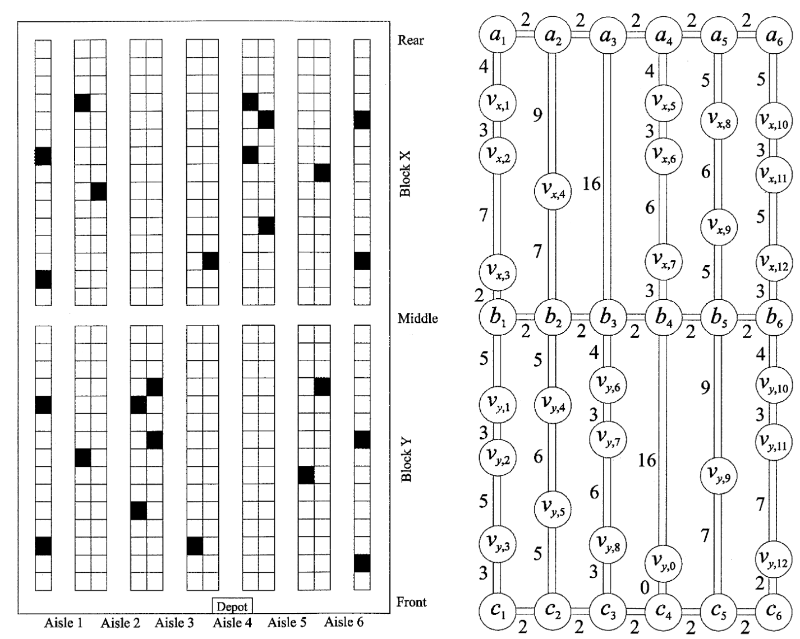Image courtesy (Roodbergen and Koster 2001)
Fixed topology
A class of graphs \(\mathcal{C}\) have a fixed topology, if there exists a graph \(G\) such that every graph \(H\in\mathcal{C}\) can be obtained through applying subdivisions of \(G\).
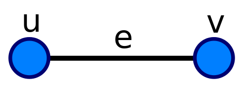 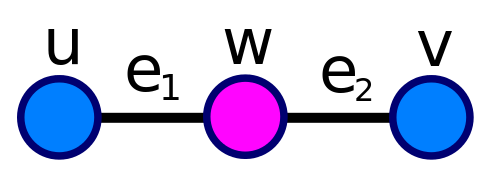
Our result
The stacker crane problem can be solved in polynomial time for fixed topologies.
The stacker crane problem can be solved in polynomial time for \(\boxminus\).
In This talk
- Review the algorithm for paths and cycles
- Show how to generalize the algorithm to general graphs
Stacker crane feels like TSP
- Permutation \(\pi:[n]\to [n]\), such that \(\pi(i)\) is the \(i\)th completed request.
- The cost of a permutation \(c(\pi)\) is \(\sum_{i=0}^n d(s_{\pi(i)},t_{\pi(i)}) + d(t_{\pi(i)},s_{\pi(i+1 \pmod {n+1})})\).
- Find a permutation of minimum cost.
Stacker crane vs TSP
- Finding a traveling salesman tour on a graph \(G=(V,E)\) is equivalent to solving the stacker crane problem on \(G\), where the requests are \(\{(v,v)|v\in V\}\).
- stacker crane is strictly harder than TSP:
- (Steiner) TSP is polynomial time solvable on trees
- stacker crane is NP-hard on Trees.
Solve SCP on paths and cycles
Algorithms of (Atallah and Kosaraju 1988; Greg N. Frederickson 1993).
Forward and backward traversal
Any tour traverse through a edge forward and backward the same number of times.
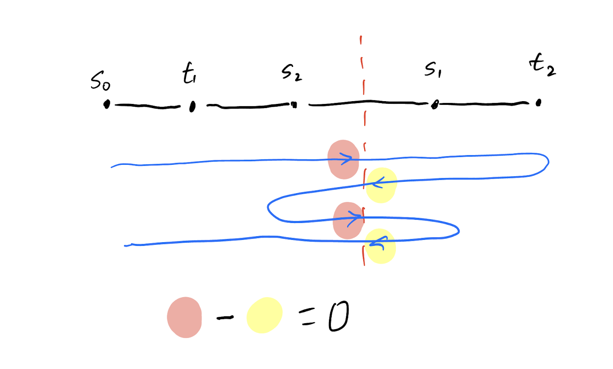The tour must traverse through \(s_i\) to \(t_i\).
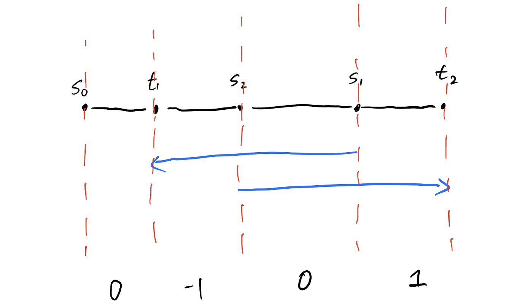We can add paths to make sure traverse number is equal both ways
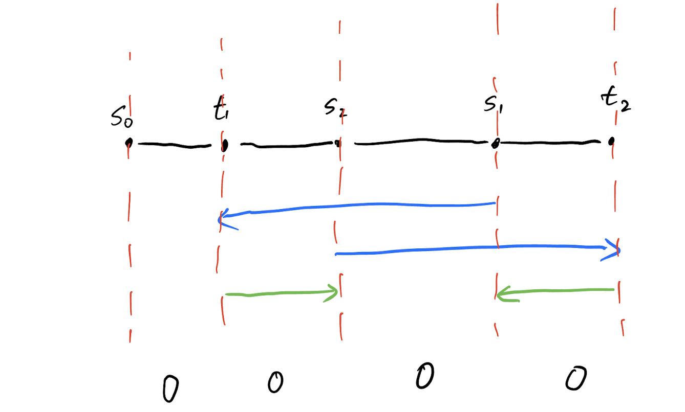Add opposing edges to make sure the tour is connected.

How to find the connecting edges?
Contract all the components, and find a set of edges that connects all those components. This is a minimum Steiner tree problem.
A Steiner tree for a set of terminal vertices \(T\) is a tree that contains all vertices in \(T\).
Minimum Steiner Tree
Given a weighted \(n\) vertex graph \(G=(V,E)\) and a set of terminal vertices \(T\subseteq V\). Find a minimum weight Steiner tree that connects the vertices in \(T\).
Minimum Steiner Tree Problem
- Finding a minimum steiner tree is NP-hard.
- Our graph is special: All non-terminal vertices has degree \(2\)!
- Finding a minimum steiner tree when there are at most \(k\) non-terminal vertices with degree at most \(3\) can be reduced to \(2^k\) calls finding minimum spanning tree.
- The minimum Steiner tree in our graph can be found in \(MST(n)\) time.
Obtain a complete solution by construct a tour through the chosen edges.
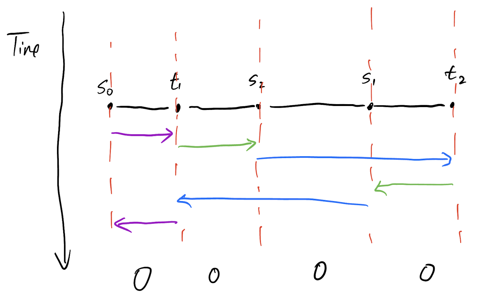SCP on a cycle
forward - backward = 0?
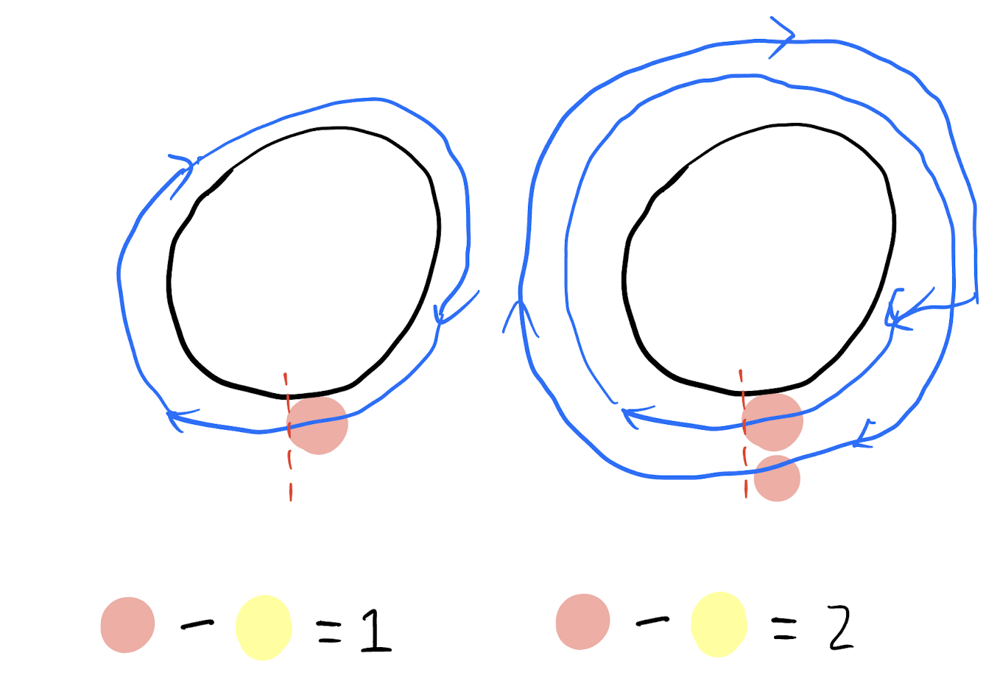Winding Number
- the number of times forward - backward is equal. It is the winding number.
Solution with winding number = 1
First, add the request paths.
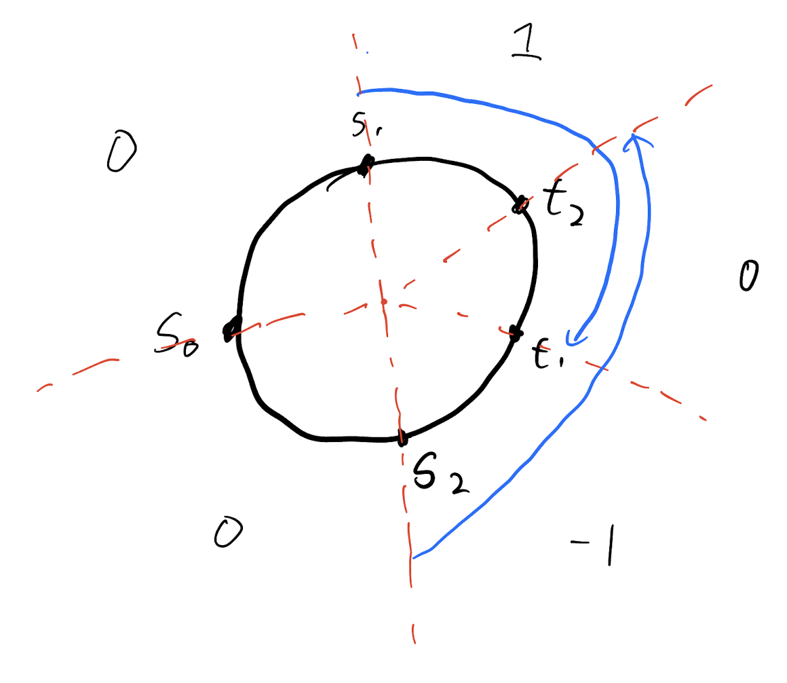Solution with winding number = 1
Add edges to make sure each edge forward - backword = 1
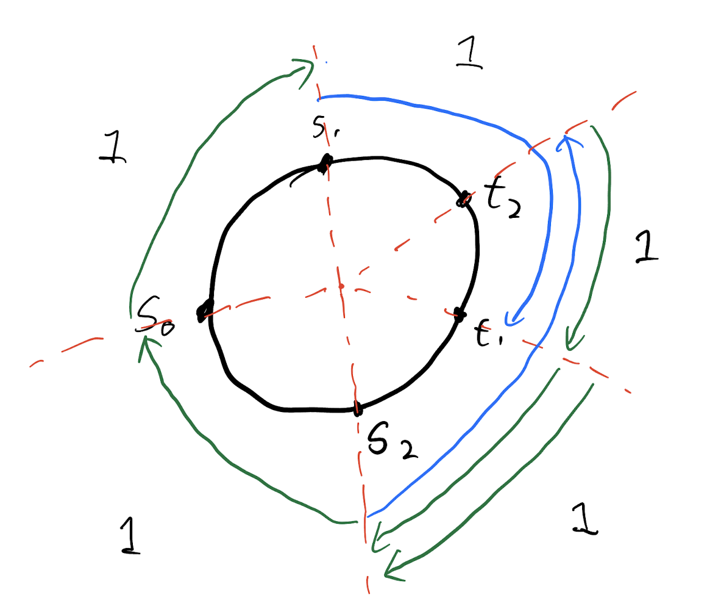Solution with winding number = 1
Run minimum Steiner tree to get the set opposing edges to connect the tour.
A complete solution for cycles
- Guess all possible winding numbers.
- The guess is in between \([-n,n]\).
- For each guess \(w\), compute a optimum solution with winding number \(w\).
- \(O(n MST(n))\) running time.
- Remove a factor of \(n\) by guess a number at most \(1\) away from \(w^*\).
SCP on general graphs
What did we do?
- Find a invariant.
- Fix a value for this invariant.
- Add the minimum possible edges to satisfy the invariant.
- Connect opposing edges without violating the invariant.
What is this invariant?
- Topologists: It’s just the 1st homology group of the graph, where graph is viewed as \(1\)-complex.
- Graph theory: The coefficient of a linear combination of cycles.
Cycle space
- \(\R^E\) a vector space indexed by the edges.
- Define some arbitrary orientation of the edges: a directed graph \(D=(V,\vec{E})\).
- \(x\in \mathcal{C}\) if and only if \(\sum_{uv\in \vec{E}} x_{uv} - \sum_{vu\in \vec{E}} x_{uv} = 0\) for each \(v\).
- \(x\) is called a cycle.
- \(\mathcal{C}\) is the space of (real weight) cycles.
- \(\mathcal{C}\) is a subspace of \(\R^E\).
Cycle space example

Cycle basis, Fundamental Cycles
- \(\mathcal{C}\) is a vector space, its dimension is the circuit rank.
- For path graph, the dimension is \(0\).
- For cycle graph, the dimension is \(1\).
- In general: \(\dim(\mathcal{C})=|E|-|V|+1\).
Fundamental Cycle
Let \(T\) be a spanning tree of \(G\). The fundamental cycle \(C_e\) is the cycle consists of the edge \(e\) and the unique path in \(T\) connecting the end points of \(e\).
The fundamental cycles for all \(e\not\in T\) is the fundamental cycle basis.
Graph encodes the request information
Obtain \(G'\) from \(G\) by adding edges \((s_i,t_i)\) for each \(i\) with cost \(d(s_i,t_i)\). (request edges)
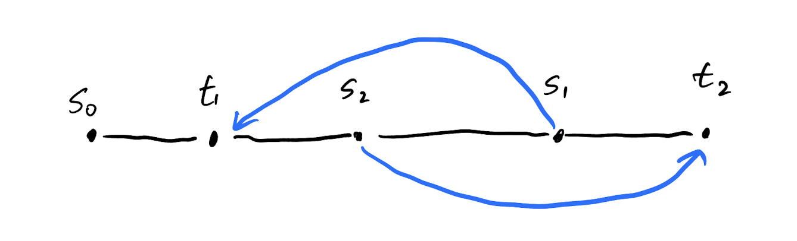Defining a tour
- A flow is \(f:V\times V \to \N\).
- A tour (also called circulation) is a flow such that \(f\), so \(\sum_{v} f(u,v) - \sum_{v} f(v,u) = 0\) for all \(u\).
- A connected tour is a tour such that \(\{ uv | f(u,v)>0\}\) is connected.
- Find a minimum cost connected tour in \(G'\) such that \(f(s_i,t_i)=1\) and \(f(t_i,s_i)=0\).
Why cycle basis?
- Every tour \(f\) maps to an element \(x\in \Z^E\cap \mathcal{C}\).
- Take \(x_{uv} = f(u,v)-f(v,u)\), call this the natural map.
- Tours contain more information than \(\mathcal{C}\).
- Traversing an edge forward and back gets cancelled out.
Example of tour vs cycle
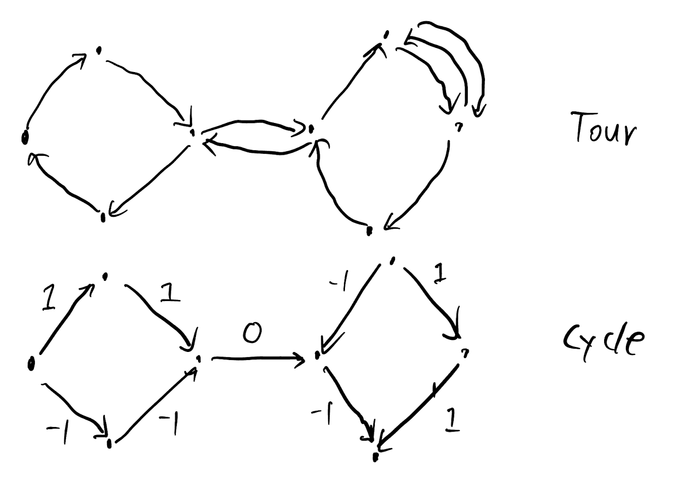The algorithm
- For every cycle where no cycle gets traversed more than \(n\) times
- Find the optimum tour with the natural map to that cycle
- Find minimum Steiner tree to connect the tour
Results
For a graph with at most \(k\) vertices with degree at least \(3\), and circuit rank \(p\), the running time of the algorithm is \(O( n^p 2^k MST(n))\).
As a special case.
SCP can be solved in \(O(n^2 MST(n))\) for \(\boxminus\).
SCP problem can be solved in \(O(n MST(n))\) for \(\bigcirc\).
Open problem
Conjecture
There exists a function \(f\), such that SCP be solved in \(O( f(p) 2^k MST(n))\) for \(n\) requests on a graph with at most \(k\) degree \(\geq 3\) vertices and circuit rank \(p\).
In particular, this would show for fixed topology graphs, the running time would be \(O(MST(n))\), matching the optimum bound.